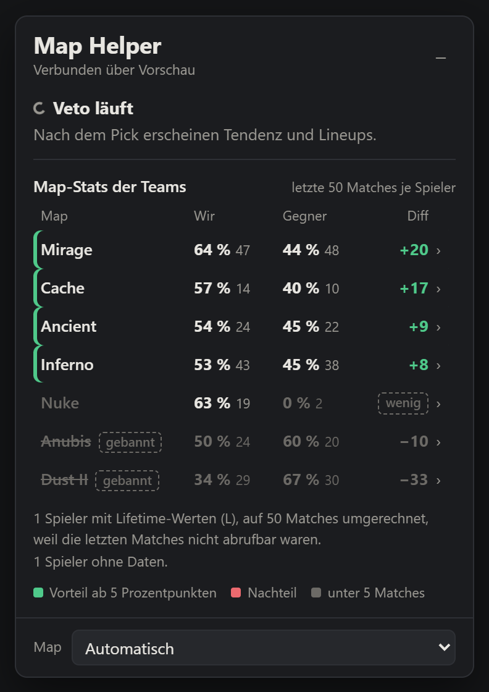
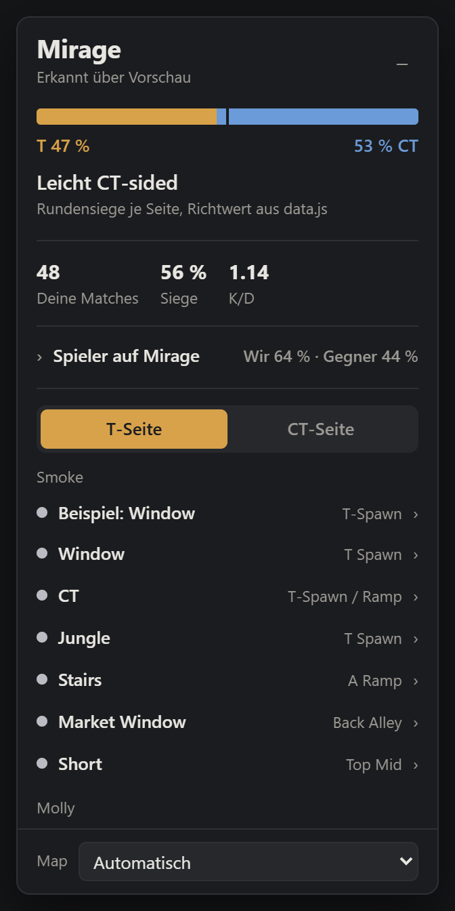

Chrome extension for CS2 on FACEIT
FACEIT Map Helper
A small helper panel inside the FACEIT match room. During the map veto it shows how both teams perform on every map. After the pick it shows the map's T/CT tendency, the ten players on that map and grenade lineups with step-by-step guides.

What it does
Veto insights
Win rate, matches and K/D of both teams per map, based on the last 50 matches of each player. Advantages and weak spots are highlighted, maps already banned are crossed out.
Map view
After the pick: T/CT tendency of the map, your own record on it and a compact list of all ten players with their numbers on this map.
Lineups
Smokes, molotovs and flashes per side with throw technique, mouse button, images for position and
aim, and a button to copy the setpos command for practice.
How it uses the FACEIT Data API
- Read-only requests:
/matches/{id},/players/{id}/games/cs2/stats,/players/{id}/stats/cs2and/players?nickname=. - About eleven requests per match room: the match plus the recent matches of the ten players.
- At most four requests at the same time, results cached for 30 minutes.
- Rate limits are respected: on HTTP 429 the extension waits and retries.
- The requests run locally in the user's browser. There is no server in between.

Privacy
- No accounts, no tracking, no analytics, no third-party servers.
- The API key and nickname stay in the user's own Chrome profile (
chrome.storage). - Data is only requested from FACEIT and only while a match room is open.
Status
Personal, non-commercial project in active development. The user interface is in German.